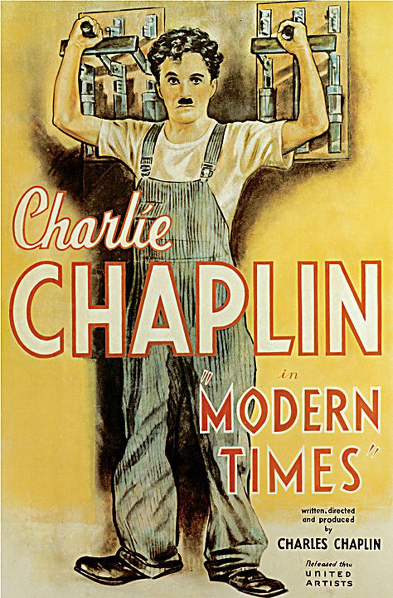
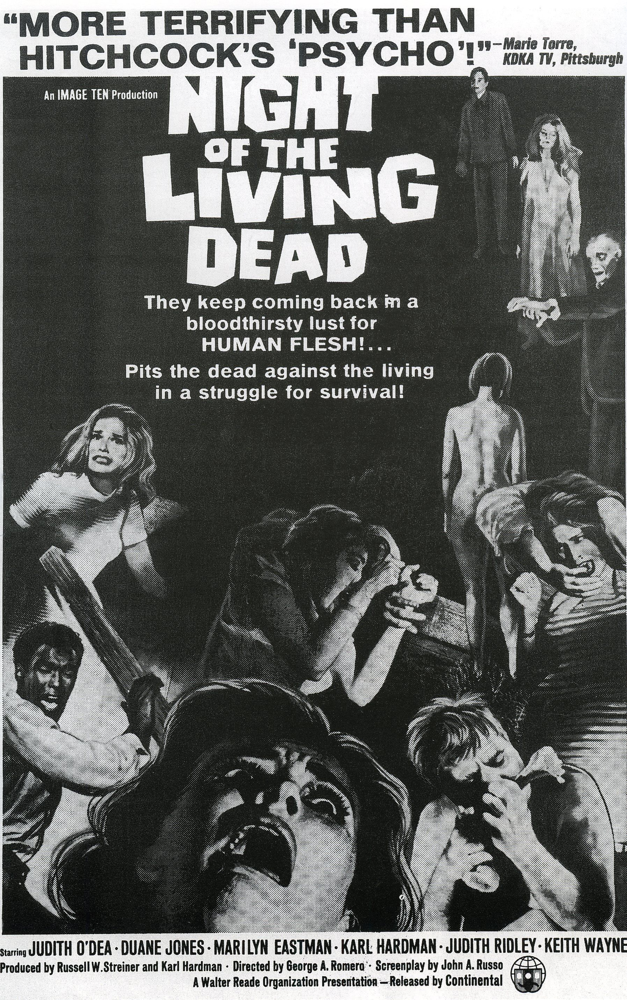
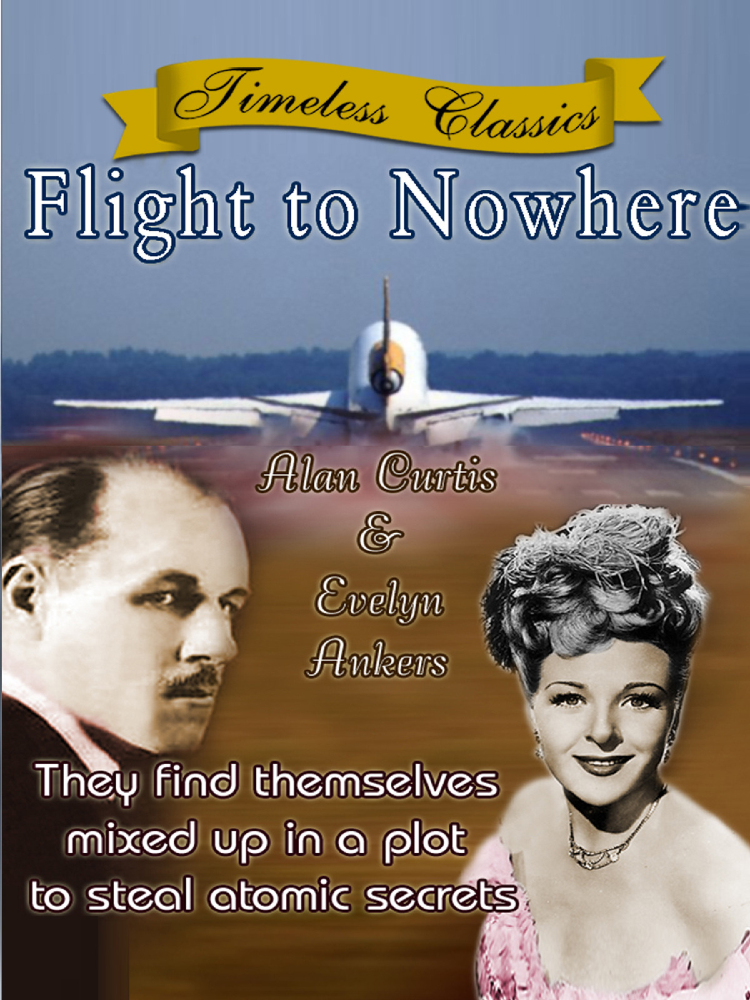

Faça parte do nosso equipe, confira as vantagens e benefícios.
|  | Tempos Modernos é um filme de 1936 idealizado por Charles Chaplin. A produção se tornou um clássico do cinema e é uma das mais conhecidas do cineasta. O personagem principal é Carlitos, interpretado também por Chaplin. Essa figura inusitada é a marca registrada do artista e está presente na maioria de seus filmes. Carlitos é um homem do povo. Ele consegue misturar humor com ingenuidade de forma brilhante, sendo assim um tipo de palhaço. |
|  | Night of the Living Dead é um filme de terror de 1968, dirigido por George A. Romero. O filme conta a história de um grupo de pessoas que se refugia em uma fazenda isolada, cercada por zumbis que querem devorar seus cérebros. O filme é considerado um clássico do gênero e uma crítica social à violência, ao racismo e à desconfiança na sociedade americana da época. |
|  | Flight to Nowhere é uma viagem aérea que não tem um destino específico e retorna ao ponto de partida. É uma forma de turismo que visa proporcionar uma experiência de voo sem sair do país de origem. Alguns voos para lugar nenhum oferecem vistas panorâmicas, entretenimento a bordo e refeições especiais. Outros são mais simples e apenas simulam o processo de embarque e desembarque. Os voos para lugar nenhum são controversos porque consomem combustível e emitem poluentes sem um propósito claro. |